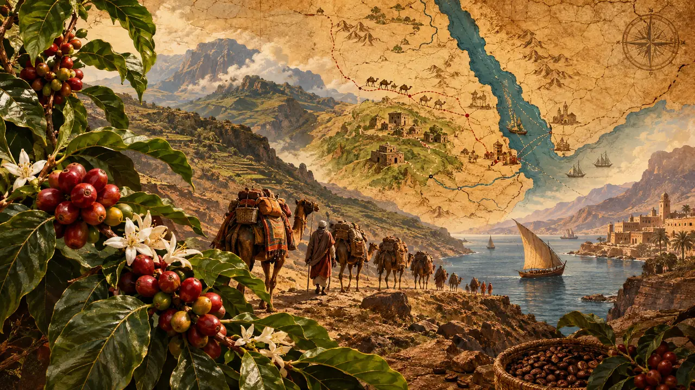
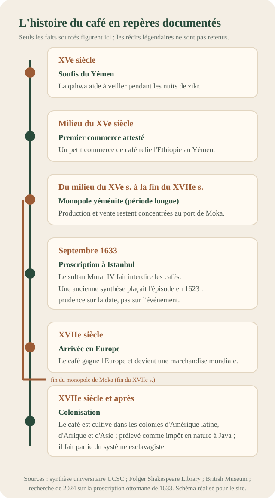
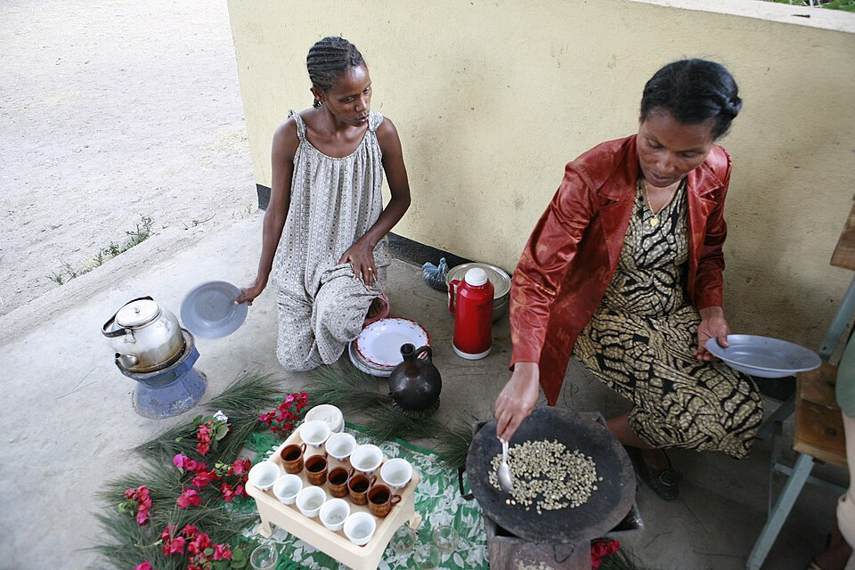

Histoire du café
L’histoire du café mêle botanique, religion, commerce, pouvoir et colonisation. Les récits légendaires circulent beaucoup ; seuls les faits documentés sont affichés ici, avec leur source.
L’essentiel en trois points
- L’Arabica est une plante native des hautes terres d’Afrique de l’Est, mais la boisson est née dans le monde islamique [1].
- Peu de preuves écrites avant le début du XVIe siècle ; un petit commerce Éthiopie–Yémen existe dès le milieu du XVe [2].
- Le café reste presque exclusivement islamique jusqu’au milieu du XVIIe siècle, puis gagne l’Europe [2].
Approfondir
Touchez un titre pour ouvrir ou fermer la rubrique.
Origines : plante africaine, boisson islamique
Le caféier Arabica est natif des hautes terres d’Afrique de l’Est, tandis que la boisson a ses racines dans le monde islamique [1]. La région de la mer Rouge, côté yéménite et côté éthiopien, est celle où le café apparaît dans les sources [3].
Il existe des légendes d’origine. Elles ne constituent pas des sources et ne sont pas reprises comme des faits.

Yémen et soufisme
Au XVe siècle, des soufis du Yémen buvaient la qahwa pour rester éveillés pendant les longues nuits de récitation du zikr [4]. Un petit commerce de café entre l’Éthiopie et le Yémen est attesté à partir du milieu du XVe siècle [2].


Moka et le monopole yéménite
Cafés, pouvoir et contrôle
Europe, colonies et esclavage
Le café arrive en Europe au XVIIe siècle et devient une marchandise mondiale lorsque les Européens le cultivent dans leurs colonies d’Amérique latine, d’Afrique et d’Asie [2]. Aux Indes néerlandaises, sur l’île de Java, le café était prélevé sur les paysans comme impôt en nature [2]. Le café a fait partie du système esclavagiste et du colonialisme [2]. Cette histoire est présentée sans l’adoucir.
Image d’en-tête : illustration générée pour le site, à valeur éditoriale, pas un document photographique. Les autres visuels de la page portent leur propre crédit en légende.
Termes du dictionnaire
Références
Les affirmations renvoient aux références numérotées ci-dessous, avec leur date de consultation. Les rubriques marquées « à documenter » n’ont pas encore de source vérifiée et n’affirment rien. Certaines sources sont secondaires : leur nature est indiquée dans leur intitulé.
- British Museum, « Life in a cup: coffee culture in the Islamic world » (guide) · consulté le 20 novembre 2026
- Coffee, 1400–1800 (Université de Californie à Santa Cruz) · consulté le 20 novembre 2026
- BBC News, « Coffee and qahwa: how a drink for Arab mystics went global » · consulté le 20 novembre 2026
- Folger Shakespeare Library, « Early modern coffee culture and history in the Islamic world » · consulté le 20 novembre 2026
- Ida Beckett, « Power, Piety and Proscription » (Wellesley College, 2024), proscription des cafés et du tabac par Murat IV en septembre 1633 · consulté le 20 novembre 2026